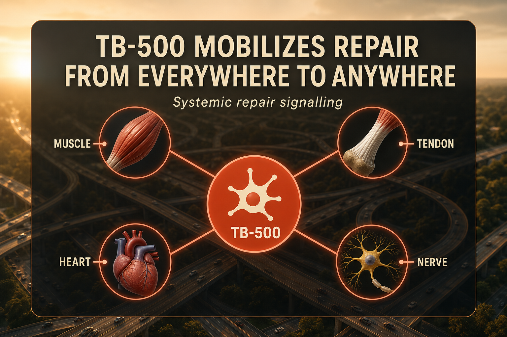

What TB-500 Is
TB-500 is a synthetic peptide based on the active region of Thymosin Beta-4 (TB4), a 43-amino-acid protein first isolated from bovine thymus gland in the 1960s by Dr. Allan Goldstein at the Albert Einstein College of Medicine. Thymosin Beta-4 is one of the most abundant actin-binding proteins in mammalian cells, present in virtually every tissue at high intracellular concentrations. TB-500 captures the active region of TB4 - specifically the 7-amino-acid sequence Ac-LKKTETQ that is responsible for TB4's primary biological activities.
TB-500 is not identical to full-length Thymosin Beta-4. It retains the actin-binding region but does not include the rest of the parent peptide. Most human research used full-length TB4 rather than the TB-500 fragment, which means some evidence requires extrapolation. A pharmaceutical formulation called RGN-259 (full TB4 applied ophthalmically) has been studied in human clinical trials for dry eye and corneal injury, providing indirect human safety data.
TB-500 is not FDA-approved for any indication. It is prohibited under WADA for competitive athletes. Australia and New Zealand classify it as a prescription medicine. It exists as a research chemical in most other jurisdictions including Canada.
Plain English Version
The City-Wide Emergency Response Network
When a water main breaks in a city, the local crew on the street can start working on the visible damage. But the job gets done faster and more completely when the city's emergency response network activates - coordinating crews from multiple districts, redirecting resources, and sending personnel from wherever they are currently stationed toward where they are needed most.
BPC-157 is the local crew. It works at the specific site you direct it toward. TB-500 is the city-wide network. It works systemically - meaning it circulates throughout your entire body and recruits repair-capable cells from wherever they are, directing them toward damaged tissue regardless of where the damage is.
TB-500's primary mechanism is G-actin sequestration. Actin is the protein that forms the structural skeleton inside cells and drives their movement. By binding to free G-actin (the monomeric form), TB-500 makes more actin available for cell migration - which is the biological process that moves repair cells from their resting location to the injury site. More cell migration means faster, more coordinated delivery of repair resources to wherever the damage is.
This systemic mobilization effect is why TB-500 is commonly paired with BPC-157 in what the peptide community calls the Wolverine Stack. BPC-157 creates the conditions for repair at the specific site. TB-500 sends more repair cells to that site from throughout the body. Together they cover both the local and systemic dimensions of the same repair job.
One sentence: TB-500 is a systemic cell traffic coordinator - it mobilizes your body's repair resources from wherever they are and sends them toward damage.
How To Picture It

How It Works
TB-500's primary mechanism is G-actin sequestration - binding monomeric actin and regulating the G-actin to F-actin equilibrium. This cytoskeletal role underlies TB-500's downstream effects on cell migration, angiogenesis, anti-inflammatory signaling, and progenitor cell recruitment.
By regulating actin polymerization, TB-500 increases the speed and directional accuracy of cell migration - particularly for fibroblasts, endothelial cells, and keratinocytes involved in tissue repair. It also upregulates VEGF (vascular endothelial growth factor), supporting new blood vessel formation at injury sites, and modulates inflammatory cytokines to support the repair phase without fully suppressing immune function.
The longer half-life of TB-500 compared to BPC-157 means it accumulates and maintains systemic therapeutic levels with weekly dosing, making it more practical for maintenance protocols than compounds requiring twice-daily injection.
Documented Benefits
studied across muscle, tendon, ligament, cardiac, and neuronal tissue in preclinical models
the primary mechanism driving faster repair across multiple tissue types
TB-500 has a more developed preclinical cardiac evidence base than BPC-157, particularly in post-myocardial infarction remodeling models
new blood vessel formation supporting nutrient delivery to repair-starved tissue
modulates immune response to support the productive healing phase
documented hair growth stimulation in preclinical models
studied in multiple animal surgical models for wound healing support
RGN-259 (full TB4 ophthalmic) has human clinical trial data for dry eye and corneal injury
Dosing Protocol
| Phase | Dose | Frequency | Notes |
|---|---|---|---|
| Loading | 4-6mg | Weekly for 4-6 weeks | Establishes systemic therapeutic levels |
| Maintenance | 2-2.5mg | Weekly | Standard ongoing protocol |
| Low maintenance | 2mg | Every 2 weeks | Longevity or general wellness protocols |
| Active injury | 5-10mg | Weekly | Higher end for significant acute damage |
Loading phase is important with TB-500 because of its systemic mechanism - you need to reach adequate concentration throughout the body before the cell migration effects are meaningful. Do not skip the loading phase and go straight to maintenance.
Reconstitution Standard
TB500 (5mg vial) + 2ml BAC water = 2.5mg/ml
| Your Dose | Units to Draw | Volume |
|---|---|---|
| 1mg | 40 units | 0.4ml |
| 2mg | 80 units | 0.8ml |
| 2.5mg | 100 units | 1.0ml |
| 5mg | 200 units (2 draws or 2ml syringe) | 2.0ml |
At doses above 2.5mg a standard 1ml insulin syringe requires two draws or use a 2ml syringe. Use the calculator on this site to confirm your specific vial size and BAC water combination. Reconstituted TB-500 is stable refrigerated for 28-30 days.
Dosage Build-Up Timeline
- Week 1-6 (loading): 4-6mg weekly - establish systemic therapeutic levels
- Week 7-12 (early maintenance): 2-2.5mg weekly - sustain levels with lower dose
- Week 13+ (maintenance): 2mg weekly or biweekly - long-term support
- Reassess at 12 weeks - if active injury has resolved, consider switching to biweekly maintenance
Common Mistakes
going straight to maintenance doses means you never reach adequate systemic concentration for meaningful cell migration effects
TB-500's systemic mechanism requires sustained concentration, not single-dose application
TB-500 works systemically, not at a specific injection site; inject subcutaneously anywhere
destroys peptide integrity; reconstituted TB-500 must be refrigerated, never frozen
mix separately; do not combine in one syringe unless specifically directed
the loading phase establishes levels; maintenance sustains the effect
Contraindications And Cautions
TB-500 promotes angiogenesis via VEGF and integrin signaling; some research suggests TB4 may be upregulated in certain tumor microenvironments; discuss with oncologist before use
colonoscopy clearance recommended
prohibited under WADA S0 non-approved substances; detection window approximately 30-45 days
insufficient safety data; avoid
prohibited under racing medication rules in many jurisdictions
the cardiac progenitor cell activation research raises theoretical considerations worth discussing with a cardiologist if you have an existing cardiac condition
What To Track
- Recovery time post-exercise (days to return to baseline)
- Target injury pain and mobility (1-10 weekly)
- Overall systemic inflammation markers (subjective: joint stiffness, morning soreness)
- Energy levels and post-workout feel (weekly subjective)
- Any local injection site reactions
Stacks Well With
- BPC-157 - the Wolverine Stack; local repair plus systemic cell mobilization
- KLOW - TB-500 is already one of KLOW's four components
- NAD+ - cellular energy support complements systemic repair capacity
- CJC-1295 + Ipamorelin - growth hormone support alongside repair for body recomposition protocols
Sources
- TB-500 and Thymosin Beta-4 Scoping Review. Applied Sciences, MDPI, 2026. mdpi.com
- TrimRX. Thymosin Beta-4 TB-500 Evidence Review, 2026. trimrx.com
- PeptideDeck. TB-500 Dosage Guide 2026. peptidedeck.com
- Peptides Lab UK. TB-500 Dosing and Reconstitution, April 2026. peptideslabuk.com
- Bollini S, Riley PR, Smart N. Thymosin beta4 in cardiac repair. Expert Opinion on Biological Therapy, 2015. pubmed.ncbi.nlm.nih.gov
- RGN-259 clinical trials - ClinicalTrials.gov. clinicaltrials.gov
- WADA Prohibited List 2025 S0. wada-ama.org
For educational and research documentation purposes only. Not medical advice. Always speak with a qualified healthcare professional before making health decisions.